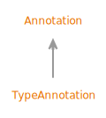

- All Superinterfaces:
ClassFileElementPREVIEW,WritableElementPREVIEW<AnnotationPREVIEW>
- All Known Subinterfaces:
TypeAnnotationPREVIEW
public sealed interface Annotation
extends WritableElementPREVIEW<AnnotationPREVIEW>
permits TypeAnnotationPREVIEW (not exhaustive)
Annotation is a preview API of the Java platform.
Preview features may be removed in a future release, or upgraded to permanent features of the Java platform.
Models an annotation on a declaration.
- Sealed Class Hierarchy Graph:
- 
- Since:
- 22
- See Also:
{kind=link}
-
Method Summary
Modifier and TypeMethodDescriptionReturns the class of the annotation.default ClassDescReturns the class of the annotation, as a symbolic descriptor.elements()Returns the elements of the annotation.static AnnotationPREVIEWof(Utf8EntryPREVIEW annotationClass, AnnotationElementPREVIEW... elements) Returns an annotation.static AnnotationPREVIEWReturns an annotation.static AnnotationPREVIEWof(ClassDesc annotationClass, AnnotationElementPREVIEW... elements) Returns an annotation.static AnnotationPREVIEWof(ClassDesc annotationClass, List<AnnotationElementPREVIEW> elements) Returns an annotation.Methods declared in interface java.lang.classfile.WritableElementPREVIEW
writeTo
-
Method Details
-
className
-
classSymbol
Returns the class of the annotation, as a symbolic descriptor.- Returns:
- the class of the annotation, as a symbolic descriptor
-
elements
List<AnnotationElementPREVIEW> elements()Returns the elements of the annotation.- Returns:
- the elements of the annotation
-
of
static AnnotationPREVIEW of(Utf8EntryPREVIEW annotationClass, List<AnnotationElementPREVIEW> elements) Returns an annotation.- Parameters:
annotationClass- the class of the annotationelements- the elements of the annotation- Returns:
- an annotation
-
of
Returns an annotation.- Parameters:
annotationClass- the class of the annotationelements- the elements of the annotation- Returns:
- an annotation
-
of
Returns an annotation.- Parameters:
annotationClass- the class of the annotationelements- the elements of the annotation- Returns:
- an annotation
-
of
Returns an annotation.- Parameters:
annotationClass- the class of the annotationelements- the elements of the annotation- Returns:
- an annotation
-
Annotationwhen preview features are enabled.